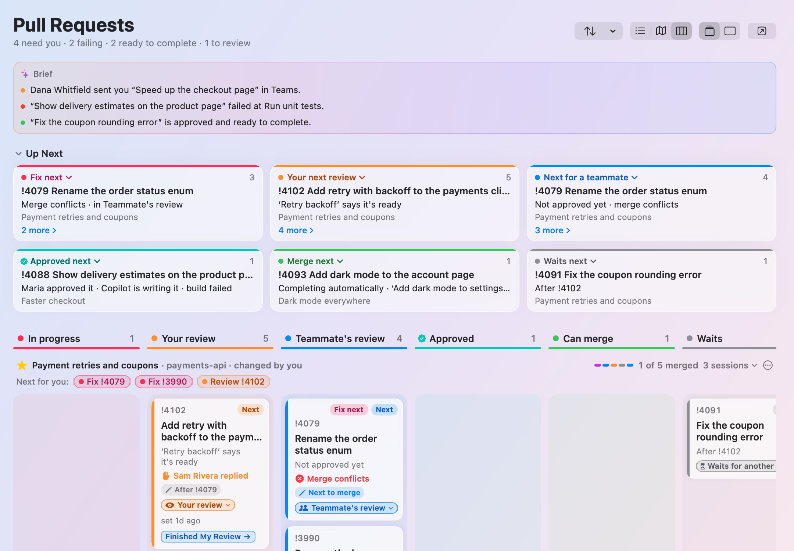
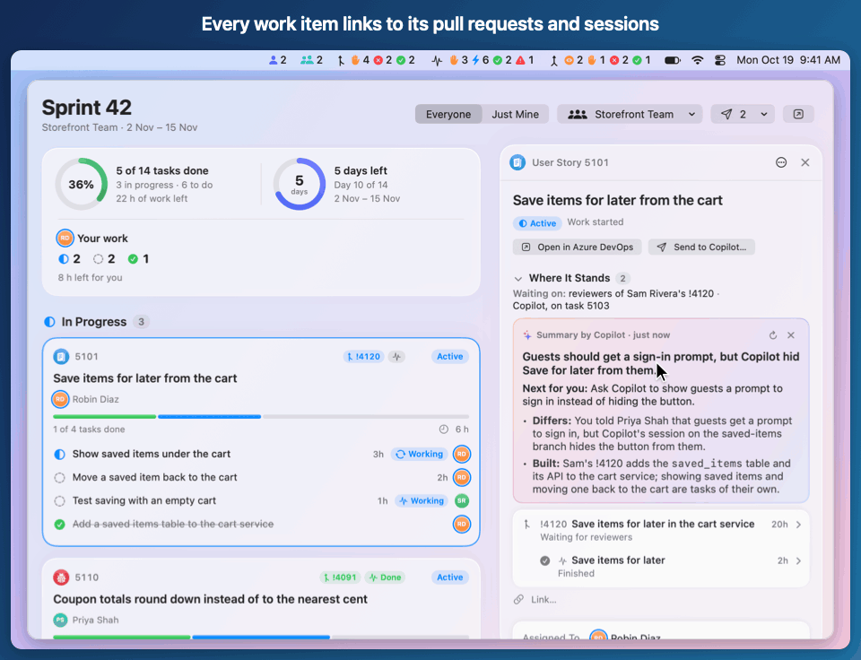
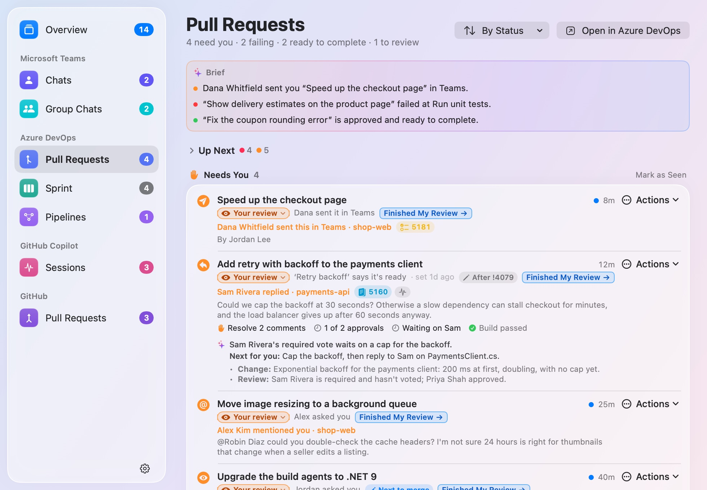
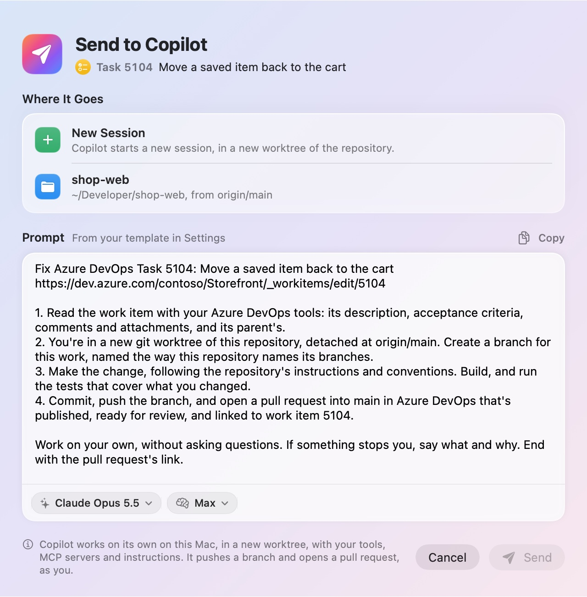

Azure DevOps
Pull requests that need your reply or review, failures and work ready to complete, with what’s left before each of yours can complete. Your team’s sprint, work-item details and pipelines.
Pull requests, GitHub Copilot sessions, your Azure DevOps sprint and Microsoft Teams chats, in one place. See what’s next, get the short version from AI, and hand the next step to Copilot.
Free and open source · macOS 26 or later · Apple silicon
At a glance
Each source gets its own item in the menu bar, with its counts: pull requests that need you, failed or are ready to complete, and Copilot sessions waiting for you, running, done or stopped. Put them together, put a widget on your desktop, or open the window for everything.
Pull requests that need your reply or review, failures and work ready to complete, with what’s left before each of yours can complete. Your team’s sprint, work-item details and pipelines.
Sessions running, waiting for your answer, ready for plan review, finished or stopped, with the work items and pull requests they’re on. From the Copilot app or the CLI.
Reviews requested from you by name, and your pull requests with changes requested, failing checks, conflicts or approvals, for every account the GitHub CLI is signed in to.
Unread one-to-one, group and meeting chats from notifications on your Mac, with optional message previews and on-device summaries.
Pull Request Order
Each Azure DevOps pull request shows its stage, in color. BriefBar works it out from Azure DevOps and your Copilot sessions, and the sessions working on your pull requests update it as they go.
In progress, Your review, Teammate’s review, Approved, Can merge, Waits for another PR or Merged. Click a stage to change it, or Finished My Review to pass a pull request on to your teammates.

Picks your next steps: the pull request to fix next, your next review, and the next of yours to follow up on, saying who hasn’t reviewed it yet and for how long.
A column for each stage and a lane for each mission. Drag a card to another column, or press ⌘→ or ⌘←, to change its stage.
The pull requests that go together, such as a stack’s or a story’s, in the order they merge. Apple Intelligence names each mission on your Mac.
Stages, missions and what you choose are BriefBar’s own: nothing changes in Azure DevOps. Pull Request Order, Up Next and the Board →
Links
Open a story on the Sprint page. Where It Stands brings together its linked pull requests, their builds and Copilot sessions, with what needs you first, and Waiting on names who acts next: you, a reviewer or Copilot.
Links you add stay in BriefBar; they don’t change Azure DevOps, GitHub or Copilot. How linking works →

Summaries
“Where does this stand, what’s next, and who is it waiting on?”
A work item’s summary reads it and its linked work, down to pull requests’ comment threads and what each Copilot session was asked and answered. You get a headline, the next step and whose it is. Pull requests and sessions get one too.
Claude Haiku 5.5 by default, through your signed-in Copilot CLI, one request on your plan each. Or any model up to Claude Opus 5.5.
On your Mac, and the default without the CLI: free, with no Copilot requests.
Either way, nothing from Teams is included and no tools are allowed: summarizing can’t change files or take actions. Which model writes them, and what it sees →

Send Work to Copilot
Send a task, review comments, a failing build or merge conflicts to Copilot, with the context already in the prompt. Review, edit or copy the prompt, then choose where it goes and the model.
Fixes don’t push unless you ask, and Pre-review changes and posts nothing. Copilot actions and their limits →

Agents
Turn on agents in Settings › Agents, then install the Copilot plugin there to use /briefbar in the GitHub Copilot app or CLI.
Private by default
No BriefBar account. No telemetry. Nothing starts acting on your work unless you ask.
Every source and feature starts off
Microsoft Teams
Reads Teams’ notifications and read markers on your Mac, with Full Disk Access; not your complete chat history.
Azure DevOps
Your pull requests, sprint and pipelines, with your Azure CLI sign-in. No personal access token.
GitHub
Reviews requested from you and your pull requests, with one read-only query through your GitHub CLI sign-in.
GitHub Copilot
Your local Copilot app or CLI session files, with no extra sign-in.
Summaries
Sends the details of the work you open to GitHub Copilot, or keeps them on your Mac with Apple Intelligence.
Make Changes in Azure DevOps
Posts your replies, sets threads’ statuses and changes tags, as you, only when you click.
Azure DevOps and GitHub use your existing CLI sign-ins, and Teams and Copilot read files on your Mac.
Sources only read. Make Changes in Azure DevOps acts as you only when you click. Send Work to Copilot is separate: Copilot works as you on what you send it, changing code, pushing a branch and opening a pull request. Both start off.
Teams content never goes to Copilot summaries or BriefBar’s agent tools.
Get started
With Homebrew:
Or download BriefBar.zip, unzip it and move BriefBar to Applications.
The app isn’t notarized by Apple, so macOS blocks the first launch: click Done, then go to System Settings › Privacy & Security › Open Anyway and confirm. On a managed Mac, check your organization’s policy first.
In BriefBar’s Settings, turn on only the sources you want. Each explains what it reads before you consent.
brew install azure-cli) and az login, or Sign In… in Settings.brew install gh) and gh auth login, or Sign In… in Settings.Later releases install through the built-in updater, even if you installed with Homebrew. Full installation guide, managed Macs and building from source →
Free and open source · macOS 26 or later · Apple silicon
On Windows? BriefBar for Windows is in development.